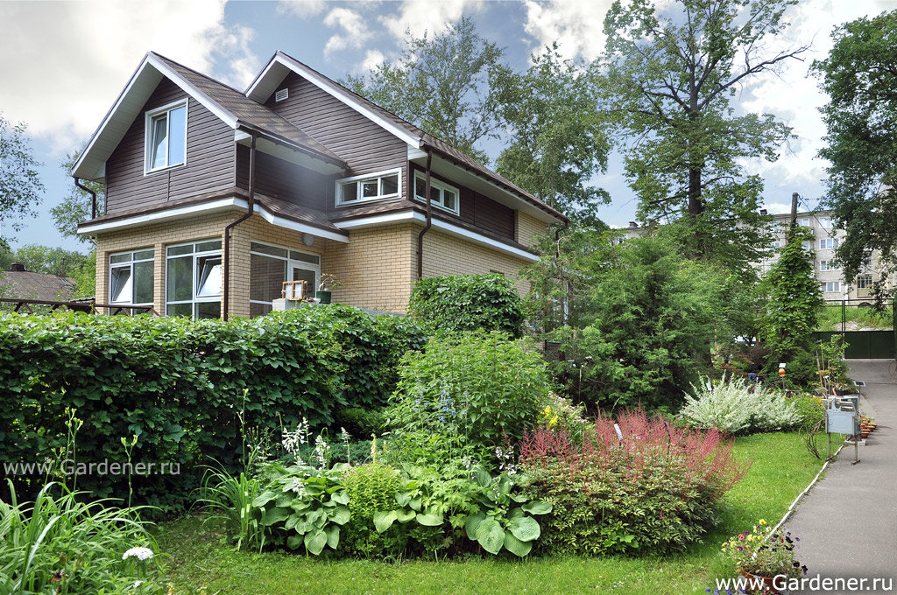
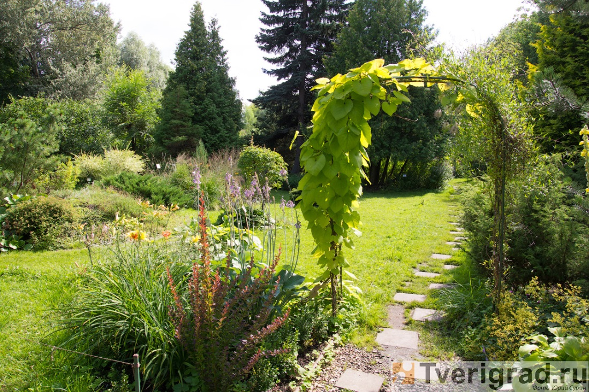
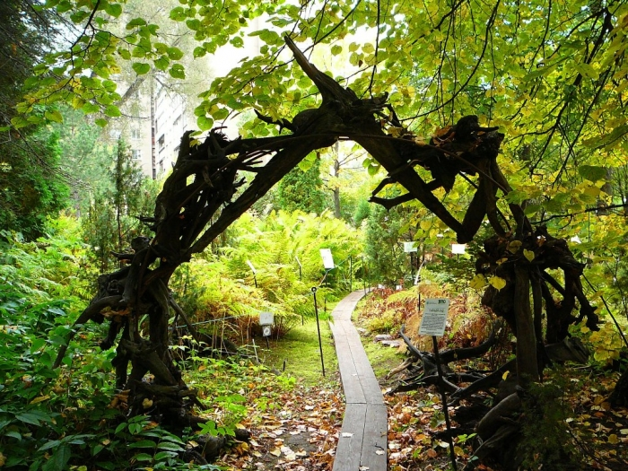
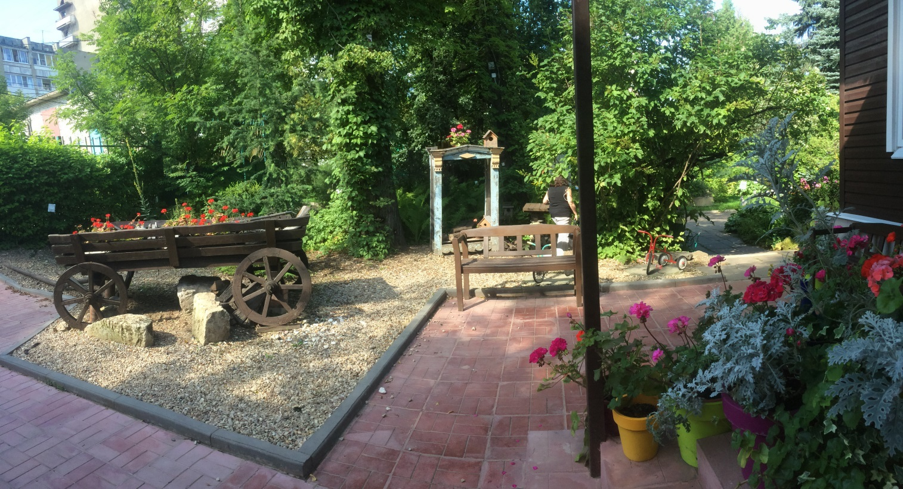
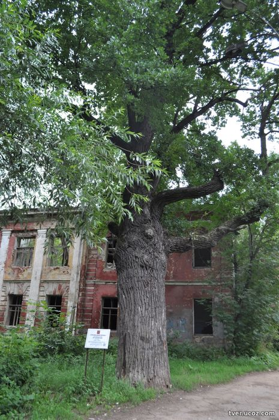
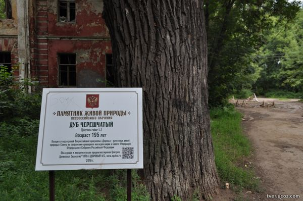
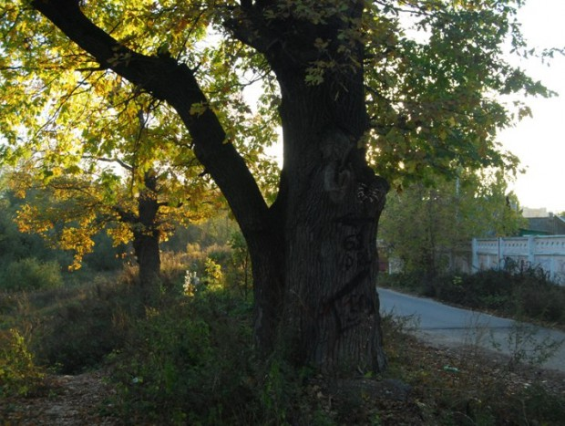
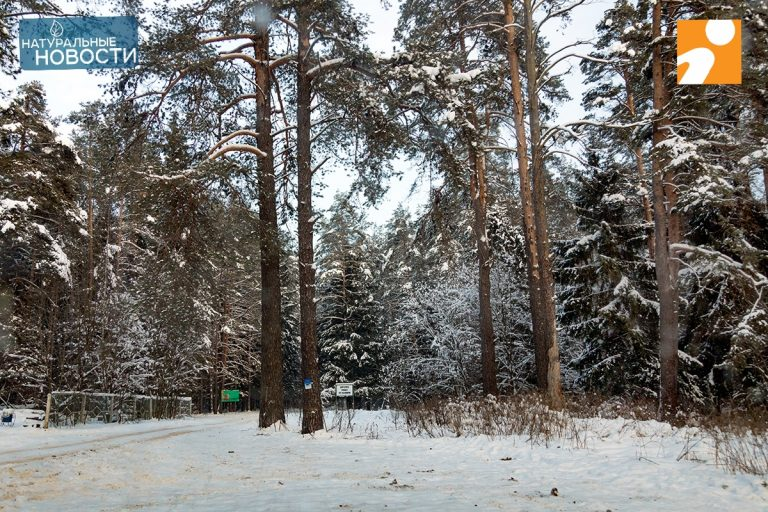
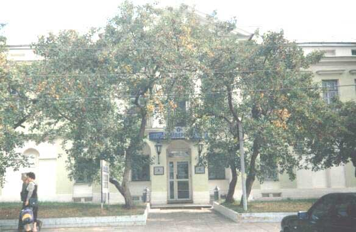
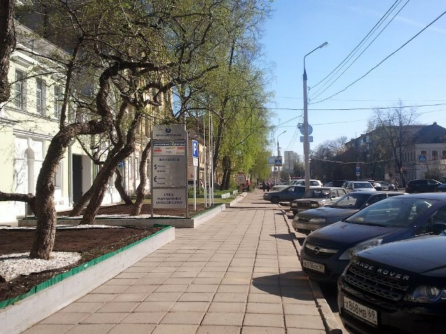

Тверь
Природа
Ботанический сад
Площадь: 2,6 га.
Дата основания: 30 октября 1879 года

Ботани́ческий сад Тверско́го госуда́рственного университе́та — самый северный ботанический сад России с экспозицией степных растений, единственный в своём роде во всем Верхневолжье. Расположен в Заволжском районе Твери, недалеко от места впадения Тверцы в Волгу. Объект историко-культурного и природного наследия — памятник археологии.
В саду представлено около 350 видов деревьев и кустарников, более 2000 травянистых растений, создано 8 экспозиций и 6 фондовых коллекций. На территории сада находится пруд (о его существовании известно ещё с XVIII века), русло ручья Бухань.
Изначально территория сада принадлежала Отроч монастырю. На ней располагался Заволжский посад Твери. В 1879 году купцом I гильдии И. И. Бобровым был заложен частный сад. Деревья (дубы, лиственницы), посаженные в то время, сохранились по сей день.
В 1898 году владельцем сада стал преподаватель естествознания Тверского реального училища и женской школы Максимовича Леонид Антонович Колаковский. На территории сада (1,5 га) он собрал обширную коллекцию древесных и кустарниковых пород, сформировал экспозиции растений по географическому принципу. В саду Колаковский часто проводил практические занятия со своими учениками. По завещанию Колаковского (1930) сад был передан городскому отделу народного образования.
До 1938 года использовался детскими учреждениями как детский парк, место отдыха и игр. В 1938 году исполком городского совета передал его Калининскому педагогическому институту под ботанический сад. Организацией ботанического учреждения занялись тверские учёные-ботаники А. А. Лебедев и М. Л. Невский. К 1941 году были заложены основные коллекции, благоустроена территория, сделаны новые посадки.
Во время оккупации Калинина сад сильно пострадал. Его восстановление началось лишь в 1949 году в соответствии с программой М. Л. Невского. Была благоустроена территория, заложены новые экспозиции, пополнены коллекции растений, построены оранжерея и здание для сотрудников. В 1973 году территория сада была передана городскому «Тресту зелёного строительства». Постепенно сад становился заброшенным сквером. Многие уникальные растения были спасены благодаря В. В. Веселову, который добровольно заботился о саде.
С 1989 года Ботанический сад является подразделением Тверского государственного университета. В 1997 году Ботанический сад ТвГУ стал членом Международного совета ботанических садов. Со 2 августа 1996 года сад открыт для посещения.
В 2009 году саду исполнилось 130 лет. 1 сентября 2009 года сад получил новый статус — «Научно-образовательный центр „Ботанический сад“».



Памятники природы в Твери
В Тверском регионе 12 деревьев включены в Национальный реестр. Это 8 дубов черешчатых, 2 сосны обыкновенные, 1 липа и 1 лиственница европейская. Кроме того, 4 дерева признаны деревьями-памятниками живой природы: дуб черешчатый в Бологовском районе, сосна обыкновенная в Кашинском районе и два дуба черешчатых в городе Тверь.
- Дуб черешчатый в парке «Воксал»
- Дуб черешчатый в Затьмачье
- Комсомольская роща
- Боярышник гибкий Скорбященский


Самым старым деревом Твери признан дуб черешчатый. Он находится рядом со зданием бывшей горбольницы № 2 в заброшенном сквере (старое название сквера или парка «Воксал»). Этот дуб включен в Национальный реестр старовозрастных деревьев. Есть легенда, что этот дуб посадил Александр I. Возраст "царского" дуба оказался неожиданно небольшим - ему 193 года. То есть дуб родился в 1821 году и он ровесник здания, построенного Николя Леграндом-младшим. Наводнение 1811 года было беспощадным ко всем насаждениям "тверского версаля". Зато понятно, что легенда о царе Александре I, скорее всего, правдива. Известно, что император посетил Тверь в конце августа 1824 года. Это вполне укладывается в возможность его посещения новопостроенного здания театра и посадки именно этого дерева. Во всяком случае, "благословенного" царя этот дуб должен помнить.

Еще один старый дуб в Твери растёт в Затьмачье. Он был посажен в 1811 году.

Поистине уникальным местом по возрастным показателям в нашем городе является Комсомольская роща, которая официально была создана в 1982 году. Площадь этого лесного массива составляет около 500 гектаров. Сама роща относится к подзоне южной тайги, которая заканчивается в Весьегонске. В этом смешанном лесу мы можем увидеть сосну сибирскую, сосну обыкновенную, ель европейскую, березу белую, березу бородавчатую и множество других деревьев и кустарников. В ней обитают более 30 видов птиц, заходят лоси, водятся белки, летучие мыши и даже встречаются ласка и горностай. В роще очень много старовозрастных хвойных деревьев, что говорит о благоприятных условиях для их сохранения. Так, например, возраст сибирских сосен и елей, находящихся в центральном ядре рощи, насчитывает в среднем от 120 до 150 лет. Ряд специалистов считают, что прогулки в таком лесу благотворно влияют на человека.


Расположен в Центральном районе города на улице Володарского. Статус ООПТ присвоен в 1992 году. Представляет собой живописную группу из семи экземпляров боярышника гибкого, имеющих редкую древовидную форму.